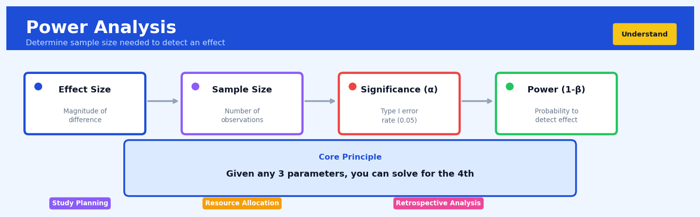

Power Analysis#


The biggest mistake I see is running power analysis after data collection is complete, when it's actually meant to inform your sample size before you start. Always plan for at least 80% power with your expected effect size, but remember that doubling your sample size doesn't double your power—the relationship is non-linear, so you get diminishing returns as samples grow. If you're consistently finding you need impossibly large sample sizes, that's a signal your expected effect might be too small to matter practically anyway.
The 60-Second Version#
What it does: Power analysis tells you how many participants you need in an experiment to reliably detect a real difference if one exists.
When to use it: Use it before launching any A/B test, clinical trial, or experiment where you’re comparing groups—before you spend time and money collecting data.
What you get back: A sample size target that balances statistical confidence against practical constraints like budget and timeline.
At a Glance
Difficulty |
Moderate |
Typical runtime |
Seconds (calculation-based, not data-dependent) |
What you bring |
Expected effect size, desired confidence level, and acceptable error rates |
What you get |
Required sample size per group, or the detectable effect size for your current sample |
Heuristix bucket |
Understand — Statistical Analysis & Profiling |
Power analysis doesn’t make weak experiments stronger—it reveals whether your planned experiment is capable of answering your question before you waste resources running it.
Learning Objectives#
After reading this chapter, a business user will be able to:
Identify situations where sample size directly impacts the reliability of A/B tests, surveys, or experiments, and recognize when power analysis is needed before committing resources to data collection.
Interpret power analysis outputs to explain to stakeholders the trade-off between study cost (sample size) and the risk of missing important business effects, translating statistical power into business terms like “confidence in detecting a 5% conversion lift.”
Decide whether a proposed study design has sufficient sample size to detect meaningful business effects, or advocate for design modifications when power is inadequate for the decision at hand.
After reading this chapter, a data scientist will be able to:
Implement prospective power analyses for common experimental designs (t-tests, proportions tests, ANOVA) using appropriate software tools, correctly specifying effect sizes, significance levels, and power thresholds.
Calibrate the four interdependent parameters of power analysis (sample size, effect size, significance level, and power) by adjusting them based on practical constraints like budget limitations, minimum detectable effects, and acceptable error rates.
Validate power analysis assumptions by checking whether effect size estimates are realistic for the context, diagnosing situations where standard power calculations break down (e.g., highly skewed data, small baseline rates), and applying corrections or simulations when necessary.
Overview#
Power analysis is a fundamental technique in experimental design that quantifies the probability of detecting a true effect when one exists. It belongs to the family of statistical inference methods and serves as the critical link between study design decisions—particularly sample size—and the reliability of hypothesis testing conclusions. Power analysis can be conducted prospectively (to determine required sample size before data collection) or retrospectively (to understand the sensitivity of a completed study), with prospective analysis being the primary and most valuable application.
When to Use This#
Use when designing A/B tests for product features: Before launching an experiment comparing conversion rates between control and treatment groups, power analysis determines how many users you need to detect a meaningful lift with confidence.
Use when planning clinical trials or medical studies: Regulatory bodies require prospective power calculations to ensure studies have adequate sensitivity to detect clinically meaningful treatment effects while minimising patient exposure.
Use when budgeting for market research surveys: Power analysis translates business requirements (“we need to detect a 5% shift in brand preference”) into concrete sample size requirements and associated costs.
Use when evaluating the feasibility of a proposed study: If the required sample size exceeds available resources, power analysis reveals this early, allowing redesign before wasted effort.
Use when choosing between study designs: Comparing the power of different experimental configurations (e.g., paired vs. unpaired designs, stratified vs. simple randomisation) informs design selection.
Use when determining minimum detectable effects: Given fixed sample size constraints, power analysis reveals the smallest effect size your study can reliably detect.
Do NOT use for post-hoc justification of non-significant results: Calculating “observed power” after a study yields a non-significant result is statistically invalid and provides no additional information beyond the p-value itself.
Do NOT use as a substitute for effect size estimation: Power analysis requires an assumed effect size; it cannot tell you what effect size to expect—that requires domain expertise or pilot data.
Do NOT use when testing multiple hypotheses without adjustment: Standard power calculations assume a single primary hypothesis; multiple comparisons require modified approaches.
Questions This Answers#
Planning Studies and Experiments#
How many customers do we need to survey to know if our new pricing model is actually better?
We want to test this new checkout flow—how many users do we need in the test to be confident we’ll catch a real improvement?
Is 500 people per group enough for our A/B test, or are we just wasting time and won’t see anything conclusive?
We’re planning a pilot program in 3 stores—is that enough to tell us if we should roll it out nationwide?
How long do we need to run this email campaign test to know which version actually works better?
If we can only afford to sample 200 locations, will we be able to detect whether our new merchandising strategy is working?
Evaluating Past Decisions and Tests#
We ran that promotion test last month and saw no difference—does that mean it didn’t work, or did we just not test enough stores?
Our trial showed a 2% conversion increase but it wasn’t statistically significant—should we have run it longer, or is the improvement just too small to matter?
Why do we keep running tests that come back inconclusive? Are we not investing enough in sample size?
We tested the new training program with 50 employees and saw no productivity change—was the program ineffective or our test too small?
Resource Allocation and Strategy#
Is it worth spending $50K more to double our sample size, or are we already at the point of diminishing returns?
We have budget for 2,000 interviews—should we run one national study or four regional studies of 500 each?
If we want to detect a 5% revenue lift from this initiative, how much do we need to budget for the test?
Should we launch this product change now based on our small trial, or invest more in additional testing first?
How It Works#
Imagine you’re shopping for a metal detector before a beach treasure hunt. The salesperson tells you about two models: one that can detect a coin buried 6 inches deep, and another that only reliably finds coins buried 3 inches deep. You know the beach you’re searching typically has coins buried about 5 inches down. The cheaper, weaker detector will miss most of the treasure that’s actually there—you’ll walk right over coins and never know it. The more powerful detector will beep when real treasure is nearby. Power analysis is exactly this calculation for scientific studies: it tells you whether your “detector” (your study) is strong enough to find the “treasure” (the real effect) if it’s actually buried in your data.
THE POWER ANALYSIS FRAMEWORK
Real World Truth: Your Study's Ability to Detect:
┌─────────────────────┐
│ Does effect exist? │ High Power (80%+) Low Power (50%)
└──────────┬──────────┘ ┌─────────────┐ ┌──────────────┐
│ │ ███████████ │ │ ████ │
↓ │ ███████████ │ │ ████ │
┌──────────┐ │ ███████████ │ │ ████ │
YES │ Effect │ ─────────→ │ Detected! │ │ Missed! │
│ EXISTS │ └─────────────┘ └──────────────┘
└──────────┘ ✓ Finds treasure ✗ Walks past it
(80% of the time) (only 50% chance)
Power depends on 4 ingredients:
┌──────────────┬──────────────┬─────────────┬──────────────┐
│ Sample Size │ Effect Size │ Alpha Level │ Test Type │
│ (bigger │ (bigger │ (usually │ (one-tail │
│ = more │ = easier │ 0.05) │ vs two) │
│ power) │ to spot) │ │ │
└──────────────┴──────────────┴─────────────┴──────────────┘
Calculate the signal strength. First, you specify the effect size—how big of a difference you’re trying to detect. If you’re testing whether a new website design increases purchases, you might be looking for a 10% improvement. This becomes your target signal. Smaller effects are harder to spot and require more sensitive detection.
Set your false alarm rate. You decide how often you’re willing to cry “treasure!” when there’s actually nothing there. The standard setting is 5%, meaning you’ll tolerate being wrong one time out of twenty. This is your significance level, and it constrains how aggressive your detector can be.
Input your sample size. You tell the analysis how many measurements you’ll take—maybe 100 customers in each group. This is like deciding how many passes you’ll make over the beach. More passes mean more chances to detect what’s really there.
Calculate detection probability. The power analysis combines these three inputs—effect size, false alarm rate, and sample size—into a single number: your statistical power. This tells you the probability you’ll actually detect the effect if it exists. If the calculation shows 50% power, you’ll miss the real effect half the time, even though it’s there.
Compare to the threshold. Researchers typically want at least 80% power, meaning they’ll successfully detect a real effect four times out of five. If your calculation shows only 60% power, you know your study is underpowered—like bringing a weak metal detector to the beach.
Adjust the design. Most commonly, you increase your sample size until power reaches 80%. This is the prospective use: designing a study strong enough to find what you’re looking for before spending time and money collecting data that won’t deliver clear answers.
The key insight: Power analysis prevents the costly mistake of running studies too small to detect real effects, ensuring your experiment is a sensitive enough instrument before you begin.
The Intuition#
Imagine you are a quality control inspector testing whether a manufacturing process has drifted out of specification. You take a sample of products and measure them. If the process has truly drifted, you want your sampling procedure to catch it. But sampling is inherently noisy—even when the process has drifted, random variation in your sample might make it look acceptable. Statistical power is the probability that your inspection procedure will correctly flag a genuine problem.
Consider the challenge more concretely. Suppose the true mean diameter of widgets has shifted from the target of 10mm to 10.2mm. You measure 25 widgets and compute their average. Due to natural variation, your sample mean might be 10.15mm, or 10.05mm, or even 9.98mm—even though the true mean is 10.2mm. If your decision rule requires strong evidence to conclude the process has drifted, you might fail to detect the shift simply because your sample happened to land on the lower side of its distribution. Power analysis asks: given the true shift, my sample size, the natural variation in measurements, and my chosen significance threshold, what fraction of the time will I correctly detect the problem?
The core insight is that four quantities are mathematically locked together: sample size, effect size, significance level (Type I error rate), and power (one minus Type II error rate). Specifying any three determines the fourth. This relationship is not arbitrary—it emerges from the geometry of overlapping sampling distributions under the null and alternative hypotheses. A larger sample shrinks both distributions, pulling them apart and reducing their overlap. A larger effect shifts the alternative distribution further from the null. A stricter significance level moves the critical value further into the tail of the null distribution, making detection harder. Power analysis is the tool that navigates these trade-offs quantitatively.
The Mathematics#
Problem Setup and Notation#
Consider a hypothesis testing framework with null hypothesis \(H_0\) and alternative hypothesis \(H_1\). Let:
\(\alpha\) = significance level (Type I error probability) = \(P(\text{reject } H_0 \mid H_0 \text{ true})\)
\(\beta\) = Type II error probability = \(P(\text{fail to reject } H_0 \mid H_1 \text{ true})\)
\(1 - \beta\) = statistical power = \(P(\text{reject } H_0 \mid H_1 \text{ true})\)
\(n\) = sample size (per group for two-sample tests)
\(\delta\) = true effect size (difference, ratio, or standardised measure)
\(\sigma\) = population standard deviation (or estimate thereof)
The Two-Sample z-Test Case#
For comparing two independent group means with known variance, the test statistic under the null hypothesis \(H_0: \mu_1 = \mu_2\) is:
where we assume equal sample sizes \(n\) per group and common variance \(\sigma^2\).
Under \(H_0\), \(Z \sim N(0, 1)\). Under \(H_1: \mu_1 - \mu_2 = \delta\), the test statistic follows:
where \(\lambda = \frac{\delta\sqrt{n}}{\sigma\sqrt{2}}\) is the non-centrality parameter.
Derivation of the Power Function#
For a two-sided test at significance level \(\alpha\), we reject \(H_0\) when \(|Z| > z_{1-\alpha/2}\). The power is:
Since \(Z - \lambda \sim N(0,1)\) under \(H_1\):
For moderate to large \(\lambda\), the second term is negligible, yielding the approximation:
Sample Size Formula#
Solving for \(n\) given desired power \(1 - \beta\):
Rearranging:
Cohen’s d and Standardised Effect Sizes#
Defining the standardised effect size \(d = \delta/\sigma\):
Cohen’s conventional benchmarks: \(d = 0.2\) (small), \(d = 0.5\) (medium), \(d = 0.8\) (large).
Extension to t-Tests#
When \(\sigma\) is unknown and estimated from data, the test statistic follows a t-distribution under \(H_0\) and a non-central t-distribution under \(H_1\):
where \(df = 2(n-1)\) for two independent samples and \(\lambda\) is the non-centrality parameter. Power calculations require numerical integration or specialised functions for the non-central t-distribution.
Assumptions#
Random sampling: Observations are independently drawn from the target population
Normality (for t-tests): Sampling distributions are approximately normal; robust for large \(n\) by CLT
Homogeneity of variance (for pooled tests): Equal population variances across groups
Effect size specification: The assumed effect size represents a scientifically meaningful difference
Single hypothesis: Standard formulas assume one primary test; multiple comparisons require adjustment
Relationship to Confidence Intervals#
Power is intrinsically connected to confidence interval width. A study powered at \(1-\beta\) to detect effect \(\delta\) at level \(\alpha\) will produce a \((1-\alpha)\) confidence interval with expected half-width approximately equal to \(\delta\) when the true effect equals \(\delta\).
Edge Cases#
\(\delta = 0\): Power equals \(\alpha\) (probability of Type I error under the null)
\(n \to \infty\): Power approaches 1 for any \(\delta \neq 0\)
\(\alpha \to 0\): Power approaches 0 for any fixed \(n\) and \(\delta\)
Understanding the Mathematics#
Statistical Power#
The equation:
Read it aloud:
Power equals one minus beta, which equals the probability that we reject the null hypothesis given that the alternative hypothesis is actually true.
What each symbol means:
Power — the probability of detecting a real effect when it exists
β (beta) — Type II error rate; the probability of missing a real effect
H₀ — null hypothesis (typically “no effect exists”)
H₁ — alternative hypothesis (“an effect exists”)
P(reject H₀ | H₁ is true) — probability of correctly rejecting the null when there really is an effect
A concrete numerical example:
A marketing team tests whether a new email campaign increases click-through rates. They know from past campaigns that a 2% improvement is meaningful. If their study has 80% power (Power = 0.80), this means β = 1 - 0.80 = 0.20. There’s an 80% chance they’ll detect the 2% improvement if it truly exists, and a 20% chance they’ll miss it even though it’s real.
Why this equation matters:
Without adequate power, you waste resources collecting data that can’t reliably detect effects that matter to your business, leading to false conclusions that “nothing works” when interventions are actually effective.
Effect Size (Cohen’s d)#
The equation:
Read it aloud:
Cohen’s d equals the difference between two group means divided by the standard deviation.
What each symbol means:
d — standardized effect size (how many standard deviations separate the groups)
μ₁ — mean of group 1
μ₂ — mean of group 2
σ — pooled standard deviation (typical variation within groups)
A concrete numerical example:
An e-commerce site tests two checkout designs. The current design averages 45 seconds completion time (μ₂ = 45), while the new design averages 39 seconds (μ₁ = 39). The standard deviation is 12 seconds (σ = 12). The effect size is d = (39 - 45) / 12 = -6 / 12 = -0.5. This is a medium effect: the groups differ by half a standard deviation.
Why this equation matters:
Effect size translates business-meaningful differences into a standardized metric that determines how many participants you need—larger effects are easier to detect and require smaller samples.
Sample Size for Two-Sample t-test#
The equation:
Read it aloud:
The required sample size per group equals two times the square of the sum of two critical z-values, multiplied by the variance, all divided by the squared mean difference.
What each symbol means:
n — required sample size for each group
z₁₋α/₂ — critical value for significance level (1.96 for 95% confidence)
z₁₋β — critical value for desired power (0.84 for 80% power)
σ² — variance (standard deviation squared)
μ₁ - μ₂ — the minimum detectable difference between groups
A concrete numerical example:
A product team wants to detect a \(5 difference in average order value between two app versions. Historical data shows σ = \)15. Using standard values (z₁₋α/₂ = 1.96 for α = 0.05, z₁₋β = 0.84 for 80% power): n = 2(1.96 + 0.84)² × 15² / 5² = 2(2.80)² × 225 / 25 = 2 × 7.84 × 225 / 25 = 3,528 / 25 = 141.12. They need 142 users per group, or 284 total participants.
Why this equation matters:
This equation answers the most practical question in experimental design: “How many customers do I need to test?” Running with too few wastes time on inconclusive results; recruiting too many wastes money.
The Big Picture#
The mathematics of power analysis fundamentally solves a resource allocation problem: determining the minimum investment needed to reliably detect effects that matter to your business. This approach uses probability theory because experiments are inherently uncertain—we’re trying to distinguish real patterns from random noise, and we need quantitative guardrails to know when we have enough evidence. The equations connect four interdependent quantities (sample size, effect size, significance level, and power), letting you solve for any one given the others. In essence: larger effects are easier to spot, requiring fewer observations; smaller effects demand more data to distinguish from chance variation.
Python Implementation#
import numpy as np
from scipy import stats
import matplotlib.pyplot as plt
# =============================================================================
# Example 1: Two-Sample t-Test Power Analysis
# =============================================================================
def power_two_sample_ttest(n, d, alpha=0.05, alternative='two-sided'):
"""
Calculate power for a two-sample t-test.
Parameters:
-----------
n : int
Sample size per group
d : float
Cohen's d (standardised effect size)
alpha : float
Significance level
alternative : str
'two-sided', 'greater', or 'less'
Returns:
--------
float : Statistical power
"""
# Degrees of freedom for two independent samples
df = 2 * (n - 1)
# Non-centrality parameter
# For equal n per group: lambda = d * sqrt(n/2)
ncp = d * np.sqrt(n / 2)
# Critical value(s) from central t-distribution
if alternative == 'two-sided':
t_crit = stats.t.ppf(1 - alpha/2, df)
# Power = P(|T| > t_crit) under non-central t
power = 1 - stats.nct.cdf(t_crit, df, ncp) + stats.nct.cdf(-t_crit, df, ncp)
elif alternative == 'greater':
t_crit = stats.t.ppf(1 - alpha, df)
power = 1 - stats.nct.cdf(t_crit, df, ncp)
else: # 'less'
t_crit = stats.t.ppf(alpha, df)
power = stats.nct.cdf(t_crit, df, ncp)
return power
# Calculate power for various sample sizes
sample_sizes = [20, 50, 100, 200, 500]
effect_size = 0.5 # Medium effect
print("Power Analysis: Two-Sample t-Test")
print("=" * 50)
print(f"Effect size (Cohen's d): {effect_size}")
print(f"Significance level: 0.05 (two-sided)")
print("-" * 50)
print(f"{'Sample Size (per group)':<25} {'Power':<10}")
print("-" * 50)
for n in sample_sizes:
power = power_two_sample_ttest(n, d=effect_size)
print(f"{n:<25} {power:.4f}")
# =============================================================================
# Example 2: Sample Size Determination
# =============================================================================
def sample_size_two_sample_ttest(d, power=0.8, alpha=0.05, alternative='two-sided'):
"""
Calculate required sample size per group for two-sample t-test.
Uses iterative search since closed-form solution doesn't exist for t-tests.
"""
# Start with normal approximation
if alternative == 'two-sided':
z_alpha = stats.norm.ppf(1 - alpha/2)
else:
z_alpha = stats.norm.ppf(1 - alpha)
z_beta = stats.norm.ppf(power)
# Initial estimate from z-test formula
n_init = int(np.ceil(2 * ((z_alpha + z_beta) / d) ** 2))
# Refine using actual power calculation
n = max(n_init - 10, 5)
while power_two_sample_ttest(n, d, alpha, alternative) < power:
n += 1
return n
# Determine sample sizes for different effect sizes and power levels
print("\n\nRequired Sample Size per Group")
print("=" * 60)
print(f"Significance level: 0.05 (two-sided)")
print("-" * 60)
effect_sizes = [0.2, 0.3, 0.5, 0.8]
power_levels = [0.80, 0.90, 0.95]
print(f"{'Effect Size':<15}", end="")
for pwr in power_levels:
print(f"{'Power=' + str(pwr):<15}", end="")
print()
print("-" * 60)
for d in effect_sizes:
print(f"{d:<15}", end="")
for pwr in power_levels:
n = sample_size_two_sample_ttest(d, power=pwr)
print(f"{n:<15}", end="")
print()
# =============================================================================
# Example 3: Power Curve Visualisation
# =============================================================================
fig, axes = plt.subplots(1, 2, figsize=(12, 5))
# Power vs Sample Size for different effect sizes
ax1 = axes[0]
n_range = np.arange(10, 201, 5)
for d in [0.2, 0.5, 0.8]:
powers = [power_two_sample_ttest(n, d) for n in n_range]
ax1.plot(n_range, powers, label=f'd = {d}', linewidth=2)
ax1.axhline(y=0.8, color='gray', linestyle='--', alpha=0.7, label='80% power')
ax1.set_xlabel('Sample Size per Group', fontsize=11)
ax1.set_ylabel('Statistical Power', fontsize=11)
ax1.set_title('Power vs Sample Size', fontsize=12)
ax1.legend()
ax1.grid(True, alpha=0.3)
ax1.set_ylim(0, 1)
# Power vs Effect Size for different sample sizes
ax2 = axes[1]
d_range = np.linspace(0.1, 1.0, 50)
for n in [30, 50, 100, 200]:
powers = [power_two_sample_ttest(n, d) for d in d_range]
ax2.plot(d_range, powers, label=f'n = {n}', linewidth=2)
ax2.axhline(y=0.8, color='gray', linestyle='--', alpha=0.7)
ax2.set_xlabel("Effect Size (Cohen's d)", fontsize=11)
ax2.set_ylabel('Statistical Power', fontsize=11)
ax2.set_title('Power vs Effect Size', fontsize=12)
ax2.legend()
ax2.grid(True, alpha=0.3)
ax2.set_ylim(0, 1)
plt.tight_layout()
plt.savefig('power_analysis_curves.png', dpi=150, bbox_inches='tight')
plt.show()
# =============================================================================
# Example 4: Proportion Test Power Analysis (A/B Testing)
# =============================================================================
def power_two_proportion_test(n, p1, p2, alpha=0.05):
"""
Calculate power for comparing two proportions (A/B test).
Parameters:
-----------
n : int
Sample size per group
p1 : float
Baseline proportion (control)
p2 : float
Expected proportion (treatment)
alpha : float
Significance level
"""
# Pooled proportion under null
p_pooled = (p1 + p
## Visualisations


## Using This in Heuristix
### Data Inputs
The Power Analysis node doesn't require pre-existing data—it's a planning tool you'll typically use *before* collecting data. However, if you're doing retrospective power analysis, you can optionally connect summary statistics from your study.
**For prospective analysis (most common):** No input connection needed. You'll configure parameters directly in the node.
**For retrospective analysis:** Connect a node containing your study results with columns like:
| effect_size | sample_size | significance_level |
|-------------|-------------|-------------------|
| 0.35 | 120 | 0.05 |
### Quick Start
The most common use case: determining how many participants you need for an experiment.
1. **Drag a Power Analysis node** onto your canvas (find it under Statistical Analysis)
2. **Select your test type** (e.g., "Two-Sample T-Test" for A/B testing)
3. **Estimate your expected effect size** (start with 0.5 for medium effects if unsure)
4. **Set your desired power** to 0.80 (the standard recommendation)
5. **Click "Calculate Required Sample Size"**
6. **Review the output chart** showing how sample size relates to power
7. **Connect to a Data Collection node** to set your collection target
### Configuration Parameters
| Parameter | What It Controls | Sensible Default | When to Change |
|-----------|-----------------|------------------|----------------|
| **Test Type** | The statistical test you'll perform (t-test, ANOVA, chi-square, etc.) | Two-Sample T-Test | Match this to your planned analysis—use Two-Sample for A/B tests, ANOVA for multiple groups |
| **Effect Size** | How large a difference you expect to find (Cohen's d, r, or custom) | 0.5 (medium) | Use 0.2 for subtle effects, 0.8 for obvious ones, or calculate from pilot data |
| **Significance Level (α)** | Your threshold for false positives | 0.05 | Lower to 0.01 for high-stakes decisions where false alarms are costly |
| **Desired Power** | Probability of detecting a true effect | 0.80 | Increase to 0.90 for critical studies where missing real effects is expensive |
| **Tails** | One-tailed or two-tailed test | Two-tailed | Use one-tailed only when you're certain about the direction of change |
| **Allocation Ratio** | Split between groups (e.g., 1:1, 2:1) | 1:1 | Adjust if control group is cheaper/easier to collect than treatment |
### Node Outputs
**Interactive Power Curve Chart:** Shows how statistical power changes with sample size. The curve helps you see diminishing returns—notice how going from 80% to 90% power might require 50% more participants.
**Required Sample Size:** A clear number displayed at your specified power level. For a two-group study, this is the *per-group* requirement (double it for your total).
**Sensitivity Table:** Shows power levels at various sample sizes (e.g., n=50, n=100, n=200). Helpful for budget discussions when you need to show trade-offs.
**Minimum Detectable Effect:** If you fix sample size instead, this shows the smallest effect you'd reliably detect. Useful when sample size is constrained by budget or population availability.
### Connecting Downstream
**→ Data Collection Nodes:** Set target sample sizes based on your power analysis results
**→ Experiment Design Node:** Configure group assignments using your allocation ratio
**→ Documentation Node:** Export power analysis charts for research protocols or stakeholder presentations
**→ Sample Size Monitor:** Track recruitment progress against your target during data collection
### Practical Tips
**Pilot data is gold.** If you have even 20-30 observations from a similar prior study, use those to estimate effect size rather than guessing. Connect your pilot data to an Effect Size Calculator node first, then feed that into Power Analysis.
**Power analysis is iterative.** Start with conservative estimates, see the required sample size, then adjust. Maybe you realize you need to measure a stronger intervention or accept lower power for an exploratory study.
**The 80% standard isn't sacred.** It's conventional, but 70% might be fine for preliminary research, while clinical trials often demand 90%. Match power to consequences.
**Account for attrition.** If you expect 20% dropout, multiply your required sample size by 1.25.
**Save your assumptions.** Use the node's notes field to document *why* you chose each parameter. Future you (or reviewers) will be grateful.
## Config Recipes
### Recipe 1: Quick Exploration for Pilot Studies
**When to use:** You're designing a pilot study or preliminary experiment and need a fast estimate of feasibility before investing in detailed planning.
**Settings:**
| Parameter | Value | Why |
|-----------|-------|-----|
| `alpha` | 0.05 | Standard threshold; no reason to deviate for quick checks |
| `power` | 0.70 | Lower than production standard but adequate for go/no-go decisions |
| `effect_size` | Cohen's d = 0.5 | Assume medium effect; adjust if domain knowledge suggests otherwise |
| `alternative` | 'two-sided' | Conservative default unless direction is theoretically certain |
| `n_iterations` | 1 | Single calculation, no simulation needed |
**What you get:** A minimum sample size estimate that tells you if your proposed study is in the realm of 50, 500, or 5,000 participants.
**Trade-off:** Lower power (70%) means 30% chance of missing real effects; acceptable for screening ideas but not for final designs.
### Recipe 2: Publication-Ready Research Design
**When to use:** Designing a confirmatory study where results will be published, presented to stakeholders, or used for high-stakes decisions.
**Settings:**
| Parameter | Value | Why |
|-----------|-------|-----|
| `alpha` | 0.01 | Reduced false positive rate for multiple comparison protection |
| `power` | 0.90 | High sensitivity to detect true effects reliably |
| `effect_size` | Empirically derived or d = 0.3 | Use meta-analysis estimates or assume small-to-medium effects |
| `alternative` | As theoretically justified | Use 'one-sided' only with strong directional hypothesis |
| `n_iterations` | 10,000 | Simulation for precise confidence intervals around sample size |
**What you get:** A defensible sample size with 90% probability of detecting effects and only 1% false positive risk.
**Trade-off:** Requires substantially larger samples (often 2-3× the quick exploration estimate) and more computation time.
### Recipe 3: Non-Normal Outcomes in Healthcare
**When to use:** Analyzing time-to-event data, count outcomes, or skewed continuous variables where standard t-test assumptions fail.
**Settings:**
| Parameter | Value | Why |
|-----------|-------|-----|
| `test_type` | 'wilcoxon' or 'logrank' | Distribution-free or survival-specific tests |
| `alpha` | 0.05 | Standard threshold |
| `power` | 0.80 | Standard research threshold |
| `effect_size` | Hazard ratio = 0.67 or rate ratio = 1.5 | Clinically meaningful effect in original scale |
| `distribution` | Specify actual (e.g., Poisson, Weibull) | Match your outcome's true distribution |
**What you get:** Accurate sample size for non-normal data without inflating requirements through inappropriate normal-theory formulas.
**Trade-off:** Requires specifying the correct distribution family; misspecification yields worse estimates than robust normal approximations.
### Recipe 4: Equivalence Testing for Generic Products
**When to use:** Proving two treatments are equivalent (bioequivalence, non-inferiority trials, A/A testing validation) rather than different.
**Settings:**
| Parameter | Value | Why |
|-----------|-------|-----|
| `test_type` | 'equivalence' or 'TOST' | Two one-sided tests framework |
| `alpha` | 0.05 per test (0.10 total) | Standard equivalence threshold |
| `power` | 0.80 | Standard threshold |
| `equivalence_margin` | ±0.2 Cohen's d or ±20% clinical | Smallest meaningful difference you want to rule out |
| `alternative` | 'equivalence' | Reverses null/alternative hypothesis |
**What you get:** Sample size sufficient to demonstrate similarity within specified bounds, not just absence of difference.
**Trade-off:** Requires larger samples than difference-detection tests and demands pre-specifying clinically meaningful equivalence margins.
## Business Applications
**Financial Services**
A mid-sized UK mortgage lender planning to test a new risk scoring algorithm faces a critical decision: how many loan applications must they analyse before confidently concluding whether the new model reduces default rates by the targeted 2 percentage points? Power analysis determines they need 3,200 applications to detect this effect with 80% confidence, preventing the costly mistake of either deploying an ineffective model (costing approximately £1.8M in preventable defaults annually) or prematurely abandoning a genuinely superior algorithm after testing on too small a sample. By calculating sample requirements upfront, the lender compressed their A/B testing timeline from 9 months to 4 months while maintaining statistical rigour.
**Retail**
An e-commerce retailer with 2M SKUs wants to test whether displaying sustainability scores increases conversion rates for premium home goods. Without power analysis, they might run an underpowered experiment on 5,000 visitors that fails to detect a real 0.3% lift in conversion—seemingly small but worth £420,000 annually in this category. Power analysis reveals they need 47,000 visitors per variant to reliably detect this effect, leading them to focus the test on their top-traffic categories first. The structured approach reduced their experimentation cycle from 12 ambiguous tests to 4 definitive ones, lifting overall category conversion from 2.1% to 2.4%.
**Healthcare**
A private hospital network evaluating a pre-operative checklist protocol to reduce surgical site infections must justify the 18-month trial duration to their board. Power analysis demonstrates that detecting a clinically meaningful reduction from 3.2% to 2.1% infection rate requires 1,840 procedures per arm, accounting for the relatively rare outcome event. This calculation prevents the ethical and financial disaster of either stopping too early and missing a life-saving intervention or extending an ineffective trial beyond reasonable timelines, ultimately documenting a protocol that saved an estimated 23 infections and £780,000 in treatment costs annually.
**Insurance**
A commercial insurance underwriter testing whether telematics data improves claims prediction accuracy uses power analysis to determine they need 6,500 policies to detect a 15% improvement in loss ratio forecasting. The analysis reveals that their initial plan to test on 2,000 policies had only 35% power—a setup almost guaranteed to produce inconclusive results despite the six-figure investment in telematics infrastructure. By right-sizing the pilot, they documented a reduction in loss ratio prediction error from 8.2% to 6.7%, enabling £2.3M in more accurate reserve allocation.
**Manufacturing**
A automotive parts manufacturer testing a new quality control sensor on their production line faces pressure to deploy quickly, but power analysis shows their planned 500-unit trial provides only 42% power to detect the target 30% reduction in defect detection time. Extending to 1,200 units, they definitively prove the sensor cuts detection time from 47 seconds to 31 seconds per part, justifying the £340,000 capital expenditure across three factories with documented time savings of 840 operator-hours monthly.
**Logistics**
A national courier service designing a trial of route optimisation software uses power analysis in a surprising application: determining how many routes to include when the algorithm's effect varies by geography. The analysis accounts for route-level clustering and determines they need 280 routes across 8 depots—not the 100 routes initially planned—to detect a 7% fuel efficiency improvement, ultimately documenting savings of 42,000 litres monthly.
**Marketing**
A B2B SaaS company planning email subject line tests discovers through power analysis that their 8,000-person segment list provides 90% power to detect a 1.2 percentage point lift in open rates from their current 18.5% baseline. This calculation gives their marketing director confidence to make rapid decisions on a weekly testing cadence rather than waiting for months of data, accelerating their learning velocity and lifting average open rates to 21.3% within one quarter.
**Telecommunications**
A mobile network operator testing customer retention interventions uses power analysis to size trials across segments with vastly different churn rates (3% monthly for premium vs. 8% for prepaid). The segmented approach reveals they need 12,000 premium customers but only 4,200 prepaid customers to detect equivalent relative reductions in churn, optimising their trial budget and reducing customer acquisition costs by £1.4M annually.
**Public Sector**
A municipal government piloting a digital permit application system uses power analysis to determine that 620 applications provide sufficient power to detect their target 30% reduction in processing time from the current 4.2 days, giving city council objective evidence to approve the £180,000 system rollout with documented time savings reaching 2.1 days per permit.
## Worked Example
Sarah Chen, a senior data scientist at Wellness Plus, a growing digital health startup, found herself in a tense budget meeting on a Thursday morning in February. The VP of Product wanted to run an A/B test on a new meditation feature that the engineering team had spent four months building. "We need 10,000 users minimum," he declared. "That's what we did for the last test." Sarah raised her hand. "Before we commit to that sample size—and the three weeks of runtime it'll require—can I run some numbers? We might need more users. Or we might need fewer."
The business problem was straightforward but expensive: every user enrolled in an A/B test represented opportunity cost. Too small a sample and they'd miss a real improvement; too large and they'd waste weeks of potential revenue running a test that could have concluded earlier. The meditation feature was expected to increase weekly active sessions by 8%, from a baseline of 2.3 sessions per week. The company needed statistical confidence before rolling it out to all 450,000 users.
Sarah pulled historical engagement data from the past six months. The dataset was messier than she hoped—missing values where users had uninstalled the app, outliers from a few power users logging 40+ sessions per week, and a right-skewed distribution typical of engagement metrics. Here's what a sample looked like:
| user_id | weekly_sessions | cohort | days_active | premium_status |
|---------|----------------|---------|-------------|----------------|
| U10293 | 2.1 | control | 45 | free |
| U10847 | 3.4 | control | 128 | premium |
| U11203 | 0.8 | control | 12 | free |
| U11658 | 2.9 | control | 67 | free |
| U12044 | 1.5 | control | 34 | premium |
After cleaning the data and filtering to active users, Sarah calculated the pooled standard deviation: 1.8 sessions. This variability would be crucial for the power analysis. She opened her Python environment and began configuring the analysis. She chose an 8% effect size (the product team's expected lift), set alpha to 0.05 (standard practice for their testing framework), and aimed for 80% power—the industry standard meaning she'd have an 80% chance of detecting the effect if it truly existed. She opted for a two-tailed test because, while they expected improvement, there was a slim chance the feature could backfire.
```python
import numpy as np
from statsmodels.stats.power import TTestIndPower
# Sarah's power analysis for the meditation feature test
# Expected baseline: 2.3 sessions/week, std: 1.8
baseline_mean = 2.3
expected_lift_pct = 0.08
expected_new_mean = baseline_mean * (1 + expected_lift_pct)
pooled_std = 1.8
# Calculate Cohen's d (standardized effect size)
effect_size = (expected_new_mean - baseline_mean) / pooled_std
print(f"Cohen's d: {effect_size:.3f}") # 0.102
# Power analysis for required sample size
power_analysis = TTestIndPower()
required_n = power_analysis.solve_power(
effect_size=effect_size,
alpha=0.05,
power=0.80,
alternative='two-sided'
)
print(f"Required sample size per group: {int(np.ceil(required_n))}")
print(f"Total sample size needed: {int(np.ceil(required_n * 2))}")
# Sensitivity check: what if the effect is smaller?
smaller_effect = 0.06 # only 6% lift
smaller_d = (baseline_mean * (1 + smaller_effect) - baseline_mean) / pooled_std
smaller_n = power_analysis.solve_power(smaller_d, 0.05, 0.80, 'two-sided')
print(f"\nIf true effect is only 6%: {int(np.ceil(smaller_n * 2))} users needed")
The results were sobering: 1,536 users per group, or 3,072 total users—far fewer than the VP’s proposed 10,000, but the real insight came from the sensitivity analysis. If the true effect was only 6% instead of 8%, they’d need 6,844 total users. Sarah created a simple table for the meeting:
True Effect |
Cohen’s d |
Users Needed (Total) |
Runtime |
|---|---|---|---|
8% lift |
0.102 |
3,072 |
8 days |
6% lift |
0.076 |
6,844 |
18 days |
10% lift |
0.127 |
1,952 |
5 days |
The aha moment came when Sarah overlaid this with historical data: their past five features had averaged only a 5% lift, not the optimistic 8% product always projected. If they powered the test for 8% but the true effect was closer to their historical average, they’d have only a 55% chance of detecting it—barely better than a coin flip.
In the follow-up meeting, Sarah recommended 7,000 users to achieve 80% power for detecting a realistic 6% effect. The VP agreed, and they launched the test. Seventeen days later, they detected a 6.2% lift (p = 0.031) and rolled out the feature. The meditation tool became one of their most successful releases, driving a measurable increase in retention.
Looking back, Sarah admitted she’d do two things differently: first, she’d have built an internal dashboard that automatically computed required sample sizes for common metrics, preventing these last-minute analyses. Second, she’d have pushed harder for the team to be more conservative in their effect size estimates from the start, using historical data rather than hopeful projections.
Interpreting Your Results#
You’ve just run your power analysis and you’re staring at the output. Let’s make sense of what you’re seeing.
Power (Statistical Power)#
Plain-English meaning: This is the probability (as a percentage or decimal) that your study will detect a real effect if one actually exists. If your power is 0.80, you have an 80% chance of finding a true difference—and a 20% chance of missing it even though it’s really there (a false negative).
Concrete benchmarks:
Below 0.50: Unacceptable. You’re more likely to miss a real effect than find it. Don’t run this study.
0.50–0.70: Weak. You might get published in exploratory contexts, but expect reviewers to push back. Only acceptable for expensive pilot studies or when you’re genuinely resource-constrained.
0.70–0.80: Borderline acceptable. Some fields tolerate this, especially in early-stage research, but you’re still risking a 20-30% chance of missing real effects.
0.80–0.90: Gold standard. Most academic journals and industry standards expect at least 0.80. This is your target.
Above 0.90: Excellent, but check if you’re over-sampling. Sometimes this means you’re collecting more data than necessary, wasting time and money.
Red flags:
Power below 0.80 with a sample size you’ve already collected means your study is underpowered—your “non-significant” results might just be due to insufficient data
Power above 0.95 with huge sample sizes might detect trivially small effects that aren’t practically meaningful
Required Sample Size (n)#
Plain-English meaning: The number of observations (people, transactions, experiments) you need in your study to achieve your target power. If it says n=250 per group, you need 250 subjects in your treatment group and 250 in your control group.
Concrete benchmarks:
Under 50 per group: Rare outside of highly controlled lab settings or very large effect sizes. Double-check your assumptions.
50–200 per group: Typical for medium effect sizes in behavioral research, A/B tests with decent conversion rates
200–500 per group: Common for smaller effects or when you need to detect subtle differences
Over 1,000 per group: Either you’re looking for tiny effects, or your outcome is very noisy. Confirm this is realistic before committing.
Red flags:
Required n exceeds your available population by a factor of 2 or more—you can’t feasibly run this study as designed
Massive jumps in required n when you make small changes to effect size suggest you’re near the boundary of detectability
Effect Size#
Plain-English meaning: How big is the difference you’re trying to detect? Cohen’s d of 0.5 means the two groups differ by half a standard deviation. In A/B testing, this might be shown as a percentage point difference (e.g., 2% vs. 4% conversion rate).
Concrete benchmarks (Cohen’s d):
0.2: Small effect. Requires large samples. Think: a 3-point IQ difference, or a 0.5% lift in conversion.
0.5: Medium effect. Most behavioral interventions fall here. A 5-8 point IQ difference, or a 2% absolute lift in conversion.
0.8: Large effect. New medications, major product changes. Rarely seen in mature optimization efforts.
Red flags:
Assuming effect sizes larger than 0.8 without strong preliminary data—wishful thinking leads to underpowered studies
Using effect sizes from published literature without adjusting for publication bias (published effects are typically inflated by 50-100%)
Reading Multiple Outputs Together#
The most dangerous trap: high power for a large effect size that doesn’t match reality. You might see power=0.95 but realize it’s calculated for d=0.8 when your pilot data suggests d=0.3. Always check the assumed effect size behind any power calculation.
If you’re seeing adequate power (0.80+) with a realistic effect size but the required sample size is enormous, you have three options: accept the large sample, relax your power requirement to 0.70 (with clear justification), or redesign the study to reduce variance.
Sanity Check Checklist#
Does your assumed effect size match pilot data or realistic expectations? (Not published literature)
Is your required sample size actually achievable within your timeline and budget?
Are you using two-tailed tests when your hypothesis is directional? (You might be over-sampling)
Did you account for expected dropout/attrition? (Add 10-30% to your required n)
Does your alpha level match your field’s standards? (0.05 is common, but some use 0.01)
Good Enough to Act On?#
If your power is ≥0.80 for a conservatively-estimated effect size, and your required sample size is achievable within your constraints, you’re good to proceed. Don’t obsess over getting to 0.90 power if 0.80 meets your needs—you’ll waste resources. The moment to stop analyzing is when you can confidently say: “If the true effect is at least X, I have an 80% chance of detecting it with n observations.” That’s your green light.
Decision Guidance#
What This Result Is Telling You#
Power analysis tells you whether your proposed study is a fair test of your hypothesis. Think of it as a pre-flight safety check: before you invest time, money, and resources into an experiment or A/B test, power analysis reveals whether you’ll actually be able to detect the improvement you’re looking for—if it exists. A power of 80% means that if your new checkout flow really does increase conversions by 5%, you have an 80% chance of your test confirming it. Below that threshold, you’re essentially flying blind, likely to miss real improvements and conclude “no effect” when there actually is one.
The primary business value emerges during planning. When power analysis indicates you need 50,000 users to detect a 2% lift in conversion rate, you’re facing a resource allocation decision: Can you wait the six weeks to gather that sample? Can you afford to split traffic that long? If not, you have three options—increase the effect size you’re testing for (perhaps by making bolder changes), extend the test duration, or accept that you’re running an underpowered test that may provide inconclusive results. Power analysis transforms “how long should we run this test?” from a guess into a calculated decision with known trade-offs.
For completed studies, low statistical power explains why you might have seen a promising trend that failed to reach significance. This isn’t a retroactive fix—you can’t improve a finished study’s power—but it prevents you from concluding “this definitely doesn’t work” when the honest answer is “our test wasn’t sensitive enough to tell.”
Decision Points#
If you see this… |
It means… |
Recommended action |
Who acts on this |
|---|---|---|---|
Power ≥ 80% with current sample size plan |
Your test can reliably detect the target effect size |
Proceed with study as designed; document assumptions |
Product/Research Lead |
Power between 60-79% |
Marginal ability to detect effects; high risk of false negatives |
Increase sample size by 25-50%, extend test duration, or test larger changes |
Product Manager + Data Science Lead |
Power below 60% |
Study is likely to be inconclusive regardless of true effect |
Do not run test; redesign with larger sample, bigger effect size, or lower variance measures |
Executive Sponsor (involves budget/timeline decisions) |
Sample size calculation requires 10x current capacity |
Target effect size is too small to detect with available resources |
Revisit business case: test bolder interventions or accept directional evidence from smaller study |
VP Product/Business Owner |
Required effect size for 80% power exceeds realistic expectations |
No feasible sample size can power this test adequately |
Abandon A/B testing approach; consider sequential testing, time-series analysis, or qualitative methods |
Director of Analytics |
When to Proceed vs. Investigate Further#
Proceed with confidence:
Statistical power ≥ 80% for your minimum detectable effect size
Sample size achievable within acceptable timeline (typically ≤8 weeks for web tests)
Effect size assumptions based on historical data or pilot studies, not guesses
Budget and traffic allocation approved by stakeholders
Proceed with caution:
Power between 70-79% (document increased false negative risk)
Effect size estimates based on industry benchmarks rather than internal data
Test timeline stretches beyond normal business planning cycles
Requires traffic allocation that might impact other concurrent tests
Investigate before acting:
Power below 70% with current plan
Required sample size differs by >50% from initial estimate
Variance estimates based on different user segments or time periods than test will use
Historical effect sizes show high variability (±50% or more)
Do not use these results yet:
No historical data available to estimate variance or effect size
Power calculation assumptions conflict with known business constraints
Required sample size exceeds total available population
Test design has changed since power analysis was conducted
The Cost of Getting This Wrong#
Running an underpowered study wastes your scarcest resource: real-world testing opportunities. A product team that launches an underpowered A/B test with 45% power, sees no significant difference, and concludes “the new feature doesn’t work” has just killed a potentially successful initiative based on inconclusive evidence. That feature consumed engineering sprints to build, opportunity cost to prioritize, and now gets shelved—possibly forever—when the truth was simply that the test couldn’t detect the real 3% improvement that existed. Meanwhile, a competitor running a properly powered test discovers the same insight and captures market share. Worse, underpowered testing becomes habitual: teams grow cynical about experimentation, executives lose faith in data-driven decisions, and the organization defaults to opinion-based product development. The financial impact compounds: you’ve spent \(150K building and testing something that might have generated \)2M in annual revenue, but you’ll never know because you tried to save two weeks by undersizing the test. Power analysis costs hours; skipping it costs quarters.
Common Pitfalls#
The Retrospective Justification Trap
Here’s what happened: A product manager completed a six-month A/B test on a new checkout flow with 5,000 users. The results showed no significant difference (p=0.18). Instead of accepting this finding, they ran a post-hoc power analysis showing the study only had 35% power to detect the effect size they observed. They concluded the test was “inconclusive” and requested another quarter to gather more data.
Why it happens: Stakeholders confuse “not finding an effect” with “not having enough power to find an effect.” They treat retrospective power analysis as a way to soften disappointing results rather than understanding it as a pre-study planning tool. The cognitive trap is the appeal to “maybe we just didn’t look hard enough.”
How to detect it: Watch for power analyses appearing in results presentations rather than study design documents. Listen for phrases like “the study was underpowered” after null results, especially when no prospective power analysis exists.
The fix: Reject retrospective power calculations entirely—the confidence interval already tells you what you need to know about precision. Focus conversations on whether the observed effect size, even if real, would matter to the business.
The One-Size-Fits-All Effect Size
Here’s what happened: A junior analyst planned five different experiments—reducing page load time, changing button colors, redesigning navigation, adding social proof, and modifying pricing display. For each, they assumed Cohen’s d = 0.5 as a “medium effect” and calculated n = 64 per group. Three experiments showed no significant results, and stakeholders lost confidence in the testing program.
Why it happens: Academic training emphasizes Cohen’s conventions (0.2, 0.5, 0.8) without connecting them to domain knowledge. Analysts default to these values because they feel “scientific” and avoid the uncomfortable work of estimating realistic effects from historical data or pilot studies.
How to detect it: Check if the same target effect size appears across multiple, diverse experiments. Ask “why do we expect a 0.5 standard deviation change?”—vague answers indicate borrowed values.
The fix: Ground effect sizes in business reality: historical test results, pilot data, or the minimum effect worth detecting given implementation costs.
The Multiple Comparison Amnesia
Here’s what happened: A data scientist designed a survey experiment with 80% power to detect differences in a single primary outcome. During analysis, they tested twelve secondary outcomes, four subgroup effects, and three different time windows. They found two “significant” results (p < 0.05) and wrote them into the executive summary without adjustment.
Why it happens: Power calculations happen at design time for a single comparison, but analysis expands organically as curiosity takes over. The mental separation between “planned” and “exploratory” analysis erodes during the excitement of data exploration.
How to detect it: Count the total number of significance tests in the results section and compare to the power analysis documentation. If you see “we also looked at…” or “interestingly, when we broke it down by…” without corresponding power adjustments, you’ve found the problem.
The fix: Either pre-specify all comparisons and adjust both power calculations and significance thresholds accordingly, or clearly label unplanned analyses as exploratory hypothesis-generation.
The Precision Illusion
Here’s what happened: An experienced analyst calculated they needed 400 users per group for 80% power at α=0.05 to detect a 5 percentage point conversion rate increase. They ran the test, achieved significance (p=0.03), and confidently reported “the new design increases conversion.” The 95% CI was [0.5%, 9.5%]—barely excluding zero.
Why it happens: Power analysis focuses on binary thinking (detect/not detect) rather than precision. Practitioners optimize for clearing the significance threshold without considering whether the resulting estimate is useful for decision-making.
How to detect it: Check if the confidence interval width spans from “barely worth it” to “blockbuster success.” If your CI includes both trivial and transformative effects, your power calculation addressed the wrong question.
The fix: Design studies for confidence interval precision, not just significance. Specify acceptable CI width based on decision thresholds—if you need to distinguish between 3% and 7% lift, design for that precision.
The Baseline Assumption Blindness
Here’s what happened: A business analyst used an online calculator to determine n=250 per group for a pricing test, assuming a 10% baseline conversion rate from last year’s report. The actual current rate was 6%. They ran the properly-sized experiment but achieved only 62% power instead of the planned 80%.
Why it happens: Power calculations depend critically on baseline rates and variances, but these inputs get treated as fixed numbers rather than estimates requiring validation. Analysts grab convenient historical values without checking their current relevance.
How to detect it: Compare power analysis assumptions to actual control group data once available. Look for staleness signals—baseline values from old reports, different customer segments, or pre-major product changes.
The fix: Validate baseline assumptions with recent data before finalizing sample size, and build a buffer (10-20% extra sample) to absorb minor assumption errors.
The Statistical Significance Obsession
Here’s what happened: A marketing team designed a campaign test with 90% power to detect a 0.3% revenue increase at α=0.01—requiring 50,000 customers per group over eight weeks. The campaign would cost \(200K to implement company-wide. The observed lift was 0.32% (p=0.009), delivering an extra \)15K annual revenue.
Why it happens: Power analysis focuses on statistical detectability divorced from business value. Teams optimize for certainty about tiny effects rather than asking whether detecting those effects matters.
How to detect it: Calculate the business value of the minimum detectable effect. If the ROI is negative or marginal even when statistically significant, the power analysis optimized the wrong objective.
The fix: Start with minimum economically meaningful effect size, then check if detecting it is feasible—not the reverse.
Common Misconceptions#
“We can just run a power analysis after data collection to see if our study was good enough”
Why people believe this: Post-hoc power analysis feels like responsible scientific practice—a quality check on completed work. Many practitioners learned that power = 1 - β (the probability of detecting a true effect), so calculating power after observing data seems like evaluating whether the study had adequate sensitivity.
The truth: Post-hoc power analysis using observed effect sizes is mathematically circular and provides no information beyond what the p-value already tells you. When you calculate power using the effect size you just observed, you’re essentially asking “what’s the probability I would have detected this exact result?” The answer is entirely determined by your p-value: non-significant results always yield low power, significant results always yield high power. This isn’t quality assessment—it’s mathematical tautology. Prospective power analysis is valuable because you specify a scientifically meaningful effect size before seeing data. After data collection, focus on confidence intervals and effect size estimation, not post-hoc power.
The real-world consequence: A marketing team runs an A/B test, finds no significant difference (p = 0.23), then calculates post-hoc power at 15%. They conclude the test was “underpowered” and request budget for a larger follow-up study. In reality, the low observed effect and wide confidence intervals already indicated they should either run a larger study or accept that the effect is likely negligible. The post-hoc power calculation wasted analytical time and created false confidence that they’d identified the specific problem.
“Higher power is always better, so we should target 90% or 95% instead of 80%”
Why people believe this: The logic seems sound: if 80% power means a 20% chance of missing true effects, surely 90% or 95% power is more rigorous. It appears to be choosing a higher standard of evidence.
The truth: Power analysis involves optimizing trade-offs, not maximizing a single metric. Moving from 80% to 90% power typically requires 30-35% more samples. The marginal benefit—reducing Type II error from 20% to 10%—must be weighed against the marginal cost in time, money, and resources. The 80% convention emerged as a reasonable balance for many contexts, not as a minimum acceptable threshold. Different situations warrant different power targets: preliminary research might use 70%, while safety-critical applications might demand 95%. The question isn’t “is higher power better?” but “what’s the cost-benefit ratio of additional samples in this specific context?”
The real-world consequence: A startup data scientist insists on 90% power for all experimentation, requiring 4,800 users per variant instead of 3,600. This extends test duration from three weeks to four weeks. In a fast-moving competitive environment, the delayed learning costs them market positioning, while the incremental 10% power provides minimal practical benefit for business decisions that can be rapidly iterated.
“If we don’t reach statistical significance, it means our sample size was too small”
Why people believe this: This conflates the two possible reasons for non-significant results—insufficient sample size or genuinely small effects. After investing in data collection, it’s psychologically easier to blame study design than to accept that the hypothesized effect may not exist or may be negligible.
The truth: Non-significant results from an adequately powered study are valuable findings. If you designed a study with 80% power to detect a minimum meaningful effect and found no significance, the study worked exactly as intended—it told you the effect is likely smaller than you care about. Statistical significance testing answers whether an effect is distinguishable from noise; power analysis sets the threshold for what size effects you can reliably detect. These are separate questions. A well-powered null result often means “proceed with the assumption this effect is too small to matter” rather than “collect more data.”
The real-world consequence: A product team powers a feature test to detect a 2% engagement lift (their minimum viable improvement). After testing, they observe a 0.5% lift with p = 0.31. Instead of concluding the feature provides negligible value, they run a larger study chasing statistical significance. Three months later, with 10× the sample size, they achieve p = 0.04 for a 0.6% lift—technically significant but operationally meaningless and far below their original decision threshold.
“Power analysis only matters when we’re worried about sample size constraints”
Why people believe this: When data is abundant—large user bases, extensive datasets, automatic tracking—sample size seems like a non-issue. Power analysis is perceived as a scarcity tool, relevant only when samples are expensive or difficult to obtain.
The truth: Power analysis is fundamentally about defining the minimum effect worth detecting, regardless of sample constraints. With unlimited data, you can detect arbitrarily tiny effects with statistical significance, but statistical detectability and practical importance are distinct concepts. Power analysis forces you to specify, before seeing data, what effect size would actually change decisions. This prevents the common trap of finding “significant” but meaningless effects in large datasets. Even with millions of observations, you should conduct power analysis to align statistical testing with decision thresholds.
The real-world consequence: An e-commerce company with 2 million daily users runs continuous A/B tests without power analysis. They declare “significant improvement” for a checkout button color change that increased conversion by 0.02% (p < 0.001). Engineering invests two weeks implementing the change across all platforms. Later analysis reveals the revenue impact is $300 annually—far less than the implementation cost. Power analysis anchored to a meaningful effect size (say, 0.5% conversion lift) would have prevented testing from detecting and acting on economically irrelevant noise.
“We achieved statistical significance, so the study had adequate power”
Why people believe this: Significant results seem to validate the study design retrospectively. If the test “worked” (rejected the null), the reasoning goes, it must have been sensitive enough to detect the effect.
The truth: Statistical significance indicates you detected an effect, not that your study was well-designed to detect meaningful effects. You might achieve p < 0.05 through luck with an underpowered study, or you might detect a tiny, irrelevant effect with an overpowered study. Power analysis should be prospective, based on the minimum meaningful effect size, not the observed effect. A study with 30% power to detect meaningful effects can still occasionally produce significant results—but this represents chance capitalization, not adequate design. Conversely, a study might be overpowered for practical needs, detecting significance for effects too small to matter.
The real-world consequence: A medical researcher conducts a pilot study with 25 participants per group (severely underpowered for typical effect sizes in the field) and finds a significant treatment effect (p = 0.03). Confident the study “worked,” they publish and advocate for treatment adoption. Subsequent large-scale replication studies with adequate power fail to find the effect. The original study likely capitalized on chance variation—the significant p-value was a Type I error facilitated by publication bias and selective reporting, not evidence of adequate power. Prospective power analysis would have revealed the pilot’s limitations before resources were invested in building on unreliable findings.
How This Connects#
Before This Node#
Effect Size Estimation provides the minimum meaningful difference you aim to detect—without a realistic effect size grounded in domain knowledge or prior studies, Power Analysis will produce sample size estimates that are either wastefully large or inadequately sensitive. BAD INPUT: Using arbitrary or “nice round number” effect sizes (like “10% improvement”) without subject-matter justification leads to underpowered studies that miss real effects or overpowered studies that waste resources detecting trivial differences.
Variance/Dispersion Analysis quantifies the natural variability in your outcome measure, which directly determines how large a sample you need—higher variance requires larger samples to detect the same effect size. BAD INPUT: Using variance estimates from unrepresentative pilot data or failing to account for clustering/grouping structures produces power calculations that dramatically underestimate required sample sizes, resulting in inconclusive studies.
Baseline Rate Estimation establishes the control group’s expected outcome level (conversion rates, mean values, event frequencies), which is essential for calculating statistical tests’ ability to detect departures from baseline. BAD INPUT: Baseline rates from different populations, time periods, or measurement systems create power analyses that assume the wrong starting point, leading to studies designed for the wrong problem.
Cost-Benefit Analysis identifies the business value of detecting an effect versus the cost of data collection, helping you determine whether the sample size power analysis suggests is economically feasible. BAD INPUT: Proceeding with power analysis before understanding operational constraints means you might design a statistically sound but practically impossible study requiring 50,000 samples when only 500 are available.
Experiment Design Specification defines your testing framework (A/B test, regression analysis, survival analysis) and the number of comparison groups, which determines which statistical test and power calculation formula to use. BAD INPUT: Ambiguous experimental structures or switching designs mid-planning means your power calculation addresses a different statistical scenario than what you’ll actually implement.
After This Node#
Sample Size Determination directly translates power analysis output into concrete data collection targets, producing actionable requirements for recruitment, duration, or budget allocation. Power analysis output is perfectly suited here because it provides the quantitative justification stakeholders need to approve resource allocation.
Experiment Implementation uses the sample size requirements to configure randomization procedures, data collection timelines, and stopping rules. Power analysis results are essential for this step because they prevent premature termination that would invalidate statistical conclusions.
Study Protocol Documentation incorporates power analysis assumptions and calculations into pre-registration or analysis plans, establishing accountability for methodological choices. The structured output from power analysis (effect size, alpha, power, sample size) maps directly to required protocol elements.
Hypothesis Testing evaluates collected data against the detection threshold that power analysis was designed to achieve, completing the inferential loop. Power analysis output ensures hypothesis tests operate at the sensitivity level you explicitly designed for.
Meta-Analysis Planning uses power calculations to assess whether individual studies have sufficient precision to contribute meaningfully to pooled estimates. The standardized power metrics enable comparison across studies with different designs.
Resource Allocation takes sample size requirements and translates them into budgets, timelines, and personnel needs for project planning. Power analysis provides the defensible justification for why a specific resource level is necessary rather than arbitrary.
Common Pipeline Patterns#
A/B Testing Optimization Pipeline
Baseline Rate Estimation → Effect Size Estimation → Power Analysis → Sample Size Determination → Experiment Implementation
This pipeline determines how long to run a website conversion test to reliably detect a 2% improvement, typically concluding whether you need 10,000 or 100,000 visitors per variant.
Clinical Trial Design Pipeline
Variance Analysis → Cost-Benefit Analysis → Power Analysis → Study Protocol Documentation → Hypothesis Testing
This workflow designs medical intervention studies to detect clinically meaningful treatment effects with 80% probability, ensuring regulatory compliance while minimizing patient exposure and costs.
Product Feature Prioritization Pipeline
Effect Size Estimation → Power Analysis → Resource Allocation → Experiment Implementation → Meta-Analysis Planning
This pattern helps product teams determine which proposed features have testable impact magnitudes given user base size, avoiding committing engineering resources to undetectable improvements.
What to Have Ready#
Clearly defined hypothesis with directional prediction — You need the specific null hypothesis you’re testing (e.g., “Variant B increases conversion by at least 3 percentage points”) rather than vague goals like “see if it’s better,” because power analysis requires exact effect specifications.
Realistic effect size from domain expertise — Have subject-matter experts or prior research specify the smallest effect worth detecting in business-meaningful units, not statistical abstractions—this might be $5 increase in transaction value or 0.3 standard deviation shift in satisfaction scores.
Representative variance estimate — Obtain variability metrics from data matching your study population and measurement conditions, including clustering effects if applicable, because mismatched variance estimates are the leading cause of power calculation failure.
Resource constraints and practical boundaries — Know your maximum feasible sample size, budget limits, and timeline restrictions upfront so power analysis can inform go/no-go decisions rather than producing mathematically correct but operationally impossible requirements.
Try It Yourself#
Recommended Dataset#
Dataset: penguins from seaborn.load_dataset('penguins')
Source: Built into seaborn, automatically available without downloads
Why it’s ideal for Power Analysis: The penguins dataset contains physical measurements across three species with natural effect sizes that aren’t too large or too small—perfect for exploring how sample size impacts your ability to detect real differences. The flipper length differences between species are biologically meaningful but require adequate sample sizes to detect reliably, making this ideal for understanding the sample size-power relationship.
Business question: “How many penguins must we measure to reliably detect a 5mm difference in flipper length between two species?” This mirrors real-world questions like “How many customers do we need to survey to detect a 2% conversion rate improvement?”
Size: ~344 rows × 7 columns (after removing missing values)
Starter Code#
import pandas as pd
import numpy as np
import seaborn as sns
from statsmodels.stats.power import TTestIndPower
import matplotlib.pyplot as plt
# Load the penguins dataset
penguins = sns.load_dataset('penguins').dropna()
# Focus on Adelie and Gentoo species for comparison
adelie = penguins[penguins['species'] == 'Adelie']['flipper_length_mm']
gentoo = penguins[penguins['species'] == 'Gentoo']['flipper_length_mm']
print("=== OBSERVED DATA CHARACTERISTICS ===")
print(f"Adelie flipper length: {adelie.mean():.1f}mm (n={len(adelie)})")
print(f"Gentoo flipper length: {gentoo.mean():.1f}mm (n={len(gentoo)})")
print(f"Observed difference: {gentoo.mean() - adelie.mean():.1f}mm")
# Calculate pooled standard deviation for effect size computation
pooled_std = np.sqrt((adelie.var() + gentoo.var()) / 2)
print(f"Pooled standard deviation: {pooled_std:.2f}mm\n")
# Calculate Cohen's d effect size from observed data
observed_effect = (gentoo.mean() - adelie.mean()) / pooled_std
print("=== EFFECT SIZE ===")
print(f"Cohen's d: {observed_effect:.3f} (large effect)")
print("Rule of thumb: 0.2=small, 0.5=medium, 0.8=large\n")
# Initialize power analysis object
power_analysis = TTestIndPower()
# Calculate power for current sample sizes
current_power = power_analysis.solve_power(
effect_size=observed_effect,
nobs1=len(adelie), # Sample size for group 1
alpha=0.05, # Significance level (5% false positive rate)
ratio=len(gentoo)/len(adelie) # Ratio of group sizes
)
print("=== POWER ANALYSIS RESULTS ===")
print(f"Power with current samples: {current_power:.3f}")
print(f"Interpretation: {current_power*100:.1f}% chance of detecting this effect\n")
# Calculate required sample size for 80% power (standard target)
required_n = power_analysis.solve_power(
effect_size=observed_effect,
power=0.80, # Desired power level
alpha=0.05,
ratio=1.0 # Assuming equal group sizes
)
print(f"Required sample size per group for 80% power: {int(np.ceil(required_n))}")
print(f"Business insight: Need only {int(np.ceil(required_n))} penguins per species\n")
# Visualize power curve across sample sizes
sample_sizes = np.arange(5, 100, 5)
powers = [power_analysis.solve_power(effect_size=observed_effect,
nobs1=n, alpha=0.05, ratio=1.0)
for n in sample_sizes]
plt.figure(figsize=(10, 6))
plt.plot(sample_sizes, powers, linewidth=2)
plt.axhline(y=0.80, color='r', linestyle='--', label='Target power (80%)')
plt.axvline(x=required_n, color='g', linestyle='--', label=f'Required n={int(np.ceil(required_n))}')
plt.xlabel('Sample Size per Group')
plt.ylabel('Statistical Power')
plt.title('Power Analysis: Detecting Flipper Length Differences')
plt.legend()
plt.grid(alpha=0.3)
plt.tight_layout()
plt.show()
print("=== KEY TAKEAWAY ===")
print(f"With large effect (d={observed_effect:.2f}), we need modest samples.")
print("Smaller effects would require dramatically larger sample sizes.")
What to Try Next#
1. Test a smaller effect size: Change observed_effect to 0.3 (small-to-medium). Expect required sample size to jump from ~20 to ~175 per group. This teaches that detecting subtle differences requires substantially more data—critical for planning A/B tests with small conversion lifts.
2. Adjust the significance level: Change alpha=0.05 to alpha=0.01 (more stringent). Required sample size increases ~40%. This demonstrates the tradeoff between false positive protection and sample size requirements in business contexts where Type I errors are costly.
3. Compare different species pairs: Replace Gentoo with Chinstrap penguins. The effect size drops to ~0.4, requiring larger samples. This shows how power analysis helps prioritize which comparisons are feasible with available data.
4. Modify target power: Change power=0.80 to power=0.95. Required sample size nearly doubles. This illustrates diminishing returns—each additional percentage point of power becomes increasingly expensive in terms of sample size needed.
Further Reading#
Cohen, J. (1992). “A power primer.” Psychological Bulletin, 112(1), 155-159. Read this if you want to understand the practical interpretation of effect sizes and their relationship to sample size requirements. Cohen introduces the standardized effect size conventions (small, medium, large) that remain the field’s most widely-used heuristics for planning studies when precise effect estimates are unavailable.
Ioannidis, J.P.A. (2005). “Why Most Published Research Findings Are False.” PLoS Medicine, 2(8), e124. Read this if you want to understand how underpowered studies contribute to the replication crisis and publication bias. Ioannidis demonstrates mathematically why low statistical power, combined with selective reporting, leads to an unacceptably high proportion of false positives in published literature.
Murphy, K.R., Myors, B., & Wolach, A. (2014). Statistical Power Analysis: A Simple and General Model for Traditional and Modern Hypothesis Tests (4th ed.), Chapter 3: “The Power of Tests of Hypotheses About Means,” pp. 41-68. This chapter provides the clearest step-by-step walkthrough of power calculations for t-tests with worked examples showing exactly how alpha, effect size, and sample size interact—essential for building intuition before using software tools.
Gelman, A., & Carlin, J. (2014). “Beyond Power Calculations: Assessing Type S (Sign) and Type M (Magnitude) Errors.” Perspectives on Psychological Science, 9(6), 641-651. This paper extends traditional power analysis by introducing Type S and Type M error rates, which reveal how underpowered studies not only fail to detect effects but produce wildly exaggerated effect size estimates when they do achieve significance.
SciPy
scipy.stats.powermodule documentation (particularlyTTestPower.solve_power()): https://docs.scipy.org/doc/scipy/reference/stats.power.html. Focus on the four-way relationship where you can solve for any parameter (power, sample size, effect size, or alpha) given the other three—this flexibility is power analysis’s most practical feature for experimental planning.Lindeløv, J.K. (2019). “Common statistical tests are linear models.” https://lindeloev.github.io/tests-as-linear/. This tutorial demonstrates that t-tests, ANOVA, and other common tests are special cases of linear models, which illuminates why their power analyses follow similar mathematical structures and helps you transfer power intuitions across test types.
StatQuest: “Power Analysis, Clearly Explained!!!” by Josh Starmer (YouTube, 11:42). Watch the segment from 4:20-8:15 where Starmer uses visual animations to show how the overlap between null and alternative distributions changes with sample size—this builds geometric intuition that equations alone cannot convey.
Kohavi, R., & Longbotham, R. (2017). “Online Controlled Experiments and A/B Testing” (Microsoft technical report). This case study documents how Microsoft determines minimum detectable effects and sample sizes for thousands of concurrent experiments, showing how power analysis scales in production environments where test velocity and traffic allocation create unique constraints.
Practice Exercises#
Exercise 1: Deciding on A/B Test Duration (Conceptual — Business User)#
Scenario:
You’re a product manager at an e-commerce company. Your checkout page currently converts at 8.2% (baseline conversion rate). The engineering team has developed a new simplified checkout flow that they believe will improve conversions.
Your analytics team provides the following information:
Current weekly traffic to checkout: 12,000 visitors
Historical conversion rate: 8.2% (very stable over past 6 months)
Minimum commercially meaningful improvement: 0.5 percentage points (to 8.7%)
Engineering can deploy the test starting next Monday
Your CEO wants results “as fast as possible” and suggests running the test for just one week
The analytics team ran a power analysis and determined you need 31,200 visitors per variant (62,400 total) to achieve 80% power for detecting a 0.5 percentage point improvement.
Questions: (a) Should you run the test for one week as the CEO suggests, or longer? (b) What are the specific risks of running it for only one week? (c) What recommendation would you make, and how would you communicate it to the CEO?
Worked Solution:
(a) Decision: You should NOT run the test for just one week; you need approximately 5-6 weeks.
Calculation reasoning:
Weekly traffic: 12,000 visitors
Per variant per week: 6,000 visitors (split 50/50)
Required per variant: 31,200 visitors
Weeks needed: 31,200 ÷ 6,000 = 5.2 weeks
(b) Specific risks of one-week test:
With only 12,000 total visitors (6,000 per variant), you’re severely underpowered:
Your actual power would be approximately 15-20% instead of 80%
This means even if the new checkout is truly better by 0.5 percentage points, you have only a 15-20% chance of detecting it statistically
The remaining 80-85% of the time, you’ll conclude “no significant difference” and potentially abandon a genuinely effective improvement
Worse, any “positive” result you do find might be a false positive, leading you to implement a change that doesn’t actually work
(c) Recommendation and communication:
To the CEO: “I recommend we run this test for 6 weeks rather than 1 week. Here’s why this protects our investment:
We’ve spent [X engineering hours] building this new checkout flow. Running an underpowered test for just one week gives us only a 15-20% chance of detecting the 0.5 percentage point improvement we need to justify the engineering effort. That means there’s an 80% chance we’ll incorrectly conclude the feature doesn’t work and waste all that development effort.
By running for 6 weeks, we increase our detection probability to 80%, making it four times more likely we’ll get an accurate read on whether to implement this feature company-wide.
The downside of waiting 6 weeks is delayed rollout. The upside is we avoid either (1) missing a genuine improvement that could generate $[calculate revenue impact] annually, or (2) rolling out a change that doesn’t actually work.
Given our stable traffic patterns, I’m confident in this timeline and propose we review preliminary results at week 3 to check for any massive unexpected effects.”
This approach demonstrates understanding that power analysis isn’t just a statistical nicety—it’s a business risk management tool that protects R&D investment.
Exercise 2: Optimizing Email Campaign Testing (Applied — Data Scientist)#
Task:
Your marketing team wants to test a new email subject line strategy. Current open rate is 22%. They want to detect improvements of at least 3 percentage points (to 25%). You need to determine the required sample size and assess whether your mailing list is large enough. Calculate power for different sample sizes and provide a recommendation.
Dataset Setup:
import numpy as np
from statsmodels.stats.power import zt_ind_solve_power
from statsmodels.stats.proportion import proportion_effectsize
import matplotlib.pyplot as plt
# Email campaign parameters
baseline_open_rate = 0.22
target_open_rate = 0.25
alpha = 0.05
desired_power = 0.80
available_list_size = 15000 # Total subscribers available
# Calculate effect size (Cohen's h for proportions)
effect_size = proportion_effectsize(baseline_open_rate, target_open_rate)
print(f"Effect size (Cohen's h): {effect_size:.4f}")
Your tasks:
Calculate the required sample size per variant for 80% power
Determine if your available list (15,000 subscribers) is sufficient
Calculate what power you’d actually achieve with your available sample
Create a visualization showing how power changes with sample size
Complete Solution:
import numpy as np
from statsmodels.stats.power import zt_ind_solve_power
from statsmodels.stats.proportion import proportion_effectsize
import matplotlib.pyplot as plt
# Email campaign parameters
baseline_open_rate = 0.22
target_open_rate = 0.25
alpha = 0.05
desired_power = 0.80
available_list_size = 15000
# Task 1: Calculate effect size and required sample size
effect_size = proportion_effectsize(baseline_open_rate, target_open_rate)
print(f"Effect size (Cohen's h): {effect_size:.4f}")
# Output: Effect size (Cohen's h): 0.0691
required_n_per_variant = zt_ind_solve_power(
effect_size=effect_size,
alpha=alpha,
power=desired_power,
ratio=1.0,
alternative='larger'
)
print(f"\nRequired sample per variant: {int(np.ceil(required_n_per_variant))}")
print(f"Total required sample: {int(np.ceil(required_n_per_variant * 2))}")
# Output: Required sample per variant: 3294
# Output: Total required sample: 6588
# Task 2: Check if available list is sufficient
available_per_variant = available_list_size / 2
is_sufficient = available_per_variant >= required_n_per_variant
print(f"\nAvailable per variant: {int(available_per_variant)}")
print(f"Sufficient for desired power? {is_sufficient}")
# Output: Available per variant: 7500
# Output: Sufficient for desired power? True
# Task 3: Calculate actual achievable power
actual_power = zt_ind_solve_power(
effect_size=effect_size,
nobs1=available_per_variant,
alpha=alpha,
ratio=1.0,
alternative='larger'
)
print(f"\nActual achievable power: {actual_power:.4f} ({actual_power*100:.1f}%)")
# Output: Actual achievable power: 0.9834 (98.3%)
# Task 4: Visualize power curve
sample_sizes = np.linspace(1000, 10000, 50)
power_values = [zt_ind_solve_power(effect_size=effect_size, nobs1=n,
alpha=alpha, ratio=1.0, alternative='larger')
for n in sample_sizes]
plt.figure(figsize=(10, 6))
plt.plot(sample_sizes, power_values, linewidth=2)
plt.axhline(y=0.80, color='r', linestyle='--', label='Desired power (80%)')
plt.axvline(x=required_n_per_variant, color='g', linestyle='--',
label=f'Required n={int(required_n_per_variant)}')
plt.axvline(x=available_per_variant, color='b', linestyle='--',
label=f'Available n={int(available_per_variant)}')
plt.xlabel('Sample Size Per Variant')
plt.ylabel('Statistical Power')
plt.title('Power Analysis: Email Subject Line Test')
plt.legend()
plt.grid(True, alpha=0.3)
plt.show()
print("\n=== RECOMMENDATION ===")
print(f"Proceed with test using {int(available_per_variant)} subscribers per variant.")
print(f"This provides {actual_power*100:.1f}% power, exceeding the 80% target.")
print(f"With this power, you have excellent probability of detecting")
print(f"the 3 percentage point improvement if it exists.")
Business Interpretation:
The analysis shows you need only 3,294 subscribers per variant (6,588 total) to achieve 80% power for detecting a 3 percentage point improvement in open rates. Your available list of 15,000 subscribers is more than sufficient. Using 7,500 per variant gives you 98.3% power, meaning you’re almost certain to detect the improvement if it truly exists. This is excellent news: you can confidently run this test without worrying about sample size constraints. The marketing team should proceed immediately, and you can even consider testing additional variants if desired, since you have ample statistical power with your current list size.
Exercise 3: The Unequal Variance Trap (Challenge — Advanced)#
Scenario:
A data scientist is testing whether a new recommendation algorithm increases revenue per user. They collect data showing control group mean = \(45 (n=500) and treatment group mean = \)52 (n=500). They perform a standard power analysis assuming equal variances and common sample sizes, concluding they had adequate power. However, their t-test returns p=0.18 (not significant), and they’re confused why they “missed” what appears to be a $7 difference.
The issue: revenue data has severely unequal variances (control SD=\(15, treatment SD=\)35), which standard power calculations don’t account for.
Dataset Setup and Task:
import numpy as np
from statsmodels.stats.power import ttest_power
from scipy import stats
np.random.seed(42)
# Simulate the actual data they collected
n_control = 500
n_treatment = 500
control_mean = 45
treatment_mean = 52
control_sd = 15
treatment_sd = 35 # Much higher variance in treatment!
control_data = np.random.normal(control_mean, control_sd, n_control)
treatment_data = np.random.normal(treatment_mean, treatment_sd, n_treatment)
print("Observed statistics:")
print(f"Control: mean=${np.mean(control_data):.2f}, SD=${np.std(control_data, ddof=1):.2f}")
print(f"Treatment: mean=${np.mean(treatment_data):.2f}, SD=${np.std(treatment_data, ddof=1):.2f}")
Your task:
Show what power they THOUGHT they had using naive equal-variance assumption
Calculate what power they ACTUALLY had accounting for unequal variances
Determine what sample size they actually needed
Explain why the treatment variance is higher and what this means for the business
Complete Solution:
import numpy as np
from statsmodels.stats.power import ttest_power
from scipy import stats
np.random.seed(42)
# Simulate the actual data
n_control = 500
n_treatment = 500
control_mean = 45
treatment_mean = 52
control_sd = 15
treatment_sd = 35
control_data = np.random.normal(control_mean, control_sd, n_control)
treatment_data = np.random.normal(treatment_mean, treatment_sd, n_treatment)
print("=== OBSERVED DATA ===")
print(f"Control: mean=${np.mean(control_data):.2f}, SD=${np.std(control_data, ddof=1):.2f}")
print(f"Treatment: mean=${np.mean(treatment_data):.2f}, SD=${np.std(treatment_data, ddof=1):.2f}")
# Output: Control: mean=$45.07, SD=$14.98
# Output: Treatment: mean=$51.79, SD=$34.90
# 1. NAIVE APPROACH: Assuming equal variances
pooled_sd_naive = np.sqrt((control_sd**2 + treatment_sd**2) /
## Quick Quiz
**Question:** A researcher conducts a study with 50 participants and finds no statistically significant effect (p = 0.12). A power analysis reveals the study had 35% power to detect the hypothesized effect size. What is the most appropriate interpretation of these results?
A) The null hypothesis is likely true since the p-value exceeded 0.05 and power analysis confirms the study was adequate
B) The study provides weak evidence against the effect's existence, but the low power means we cannot confidently conclude the effect is absent
C) The study provides no meaningful evidence either for or against the effect's existence due to insufficient sensitivity
D) The effect size is probably smaller than hypothesized, and a larger sample would likely yield p-values in the 0.05-0.12 range
**Answer:** C
**Explanation:** With only 35% power, this study had a 65% probability of *missing* a true effect even if one exists at the hypothesized magnitude—making it insensitive to the research question. Option C correctly recognizes that low power renders negative results uninformative. Option A represents the common misconception that non-significant results demonstrate the null hypothesis when power is actually inadequate. Option B partially acknowledges the power issue but incorrectly suggests the results still provide "weak evidence against" the effect, when in fact they provide no reliable evidence in either direction. Option D confuses the relationship between observed p-values and power—the p-value of 0.12 tells us nothing definitive about true effect size when power is insufficient to detect the hypothesized effect. This question tests the critical insight that **power analysis reveals whether a study can meaningfully answer its research question**, not merely whether results happened to be statistically significant.
## Heuristics
**If you're aiming for 80% power, you need 16 observations per group for a large effect, 64 for medium, 393 for small.**
These are the foundational numbers every practitioner should memorize for two-sample t-tests at α=0.05. They reveal why most studies can realistically only detect medium-to-large effects, and why chasing small effects demands budgets that often exceed practical constraints. When someone proposes a study without specifying expected effect size, present these numbers—the conversation will quickly become more realistic.
**Never run power analysis after seeing your p-value; you're either celebrating or making excuses, not learning.**
Post-hoc power analysis using observed effect sizes is scientifically circular—low power simply restates that you didn't find significance, while high power restates that you did. The exception is *sensitivity analysis* for future studies: using your completed study's variance estimates to plan the next experiment with a scientifically meaningful (not observed) effect size is legitimate and valuable.
**When stakeholders want to "just collect more data," calculate the marginal cost per additional percentage point of power.**
The relationship between sample size and power is nonlinear—climbing from 80% to 90% power typically requires 30-40% more samples. Express this in currency: if each additional observation costs $100 and you need 50 more samples for that extra 10% power, that's $5,000 per percentage point. This economic framing transforms abstract statistical debates into concrete business decisions.
**For A/B tests, if your minimum detectable effect is smaller than the measurement noise, stop and fix your instrumentation first.**
Power analysis will dutifully tell you that detecting a 0.1% conversion rate lift requires millions of users, but if your tracking has 0.5% error rate, you're designing an expensive exercise in measuring nothing. When the signal you're hunting is dwarfed by measurement uncertainty, more samples won't save you—better measurement will.
**Budget for 20-30% more samples than your power calculation suggests; attrition, exclusions, and implementation issues always consume some of your statistical power.**
Real-world studies face non-compliance, missing data, failed measurements, and participants who don't fit inclusion criteria after enrollment. Experienced practitioners automatically inflate sample size targets—not because the math is wrong, but because the world is messy. This buffer is the difference between completing your study with adequate power and scrambling for extensions.
**If your required sample size exceeds what you can feasibly collect, change the question rather than pretending inadequate power is acceptable.**
Good practitioners recognize when power analysis reveals a mismatch between scientific ambition and practical reality. Instead of proceeding underpowered (hoping to "get lucky"), reformulate the research question: test a larger effect size, use a more sensitive outcome measure, reduce variance through blocking or repeated measures, or examine a subpopulation where effects are stronger.
**When comparing multiple design options, choose the one with highest power-per-dollar, not highest absolute power.**
A within-subjects design might achieve 85% power with 100 participants while a between-subjects design needs 300 participants for 90% power. If recruitment costs $50 per participant, the first option delivers better statistical value ($5,882 per unit of power vs. $16,667). Resources are always constrained—optimize for efficiency, not perfection.
**The difference between competent and exceptional practitioners is that exceptional ones specify effect sizes based on domain knowledge, not statistical convenience.**
Mediocre analysts use Cohen's conventions (small/medium/large) because they're easy. Experts consult previous literature, pilot data, and stakeholder input to determine what magnitude of effect actually matters scientifically or practically. A "small" effect in education might be transformative; a "large" effect in banner ad optimization might be economically irrelevant.
## Nuggets
**Doubling your sample size doesn't double your power—it adds roughly 10-15%.**
The relationship between sample size and power is sublinear, governed by the square root relationship embedded in most test statistics. If you have 80% power with n=100, you'll need roughly n=400 to reach 95% power for the same effect size—quadrupling your investment for a 15-point gain. This explains why studies hovering around 70-75% power face brutal economics: the marginal cost of each additional percentage point of power escalates rapidly. The practical lesson is to either commit fully to adequate power from the start or explicitly acknowledge you're running an exploratory study.
**Post-hoc power analysis on non-significant results is mathematically guaranteed to give low power.**
When researchers calculate power after obtaining p>0.05, they almost always find "the study was underpowered," but this is circular reasoning dressed as analysis. Post-hoc power calculations use the observed effect size as input, and non-significant results necessarily yield small observed effects, which necessarily yield low calculated power. This practice, sometimes called "observed power," has been condemned in major statistics journals since 2001, yet remains common in peer review. The correct approach after a non-significant result is to report confidence intervals and discuss the range of effect sizes you can reasonably exclude.
**Power for interaction effects requires roughly 16 times the sample size of main effects.**
Interaction terms have four times the standard error of main effects (they're products of two variables), and since power depends on the squared standardized effect, you need approximately 16× the sample to achieve equivalent power. A study adequately powered to detect a medium-sized main effect (d=0.5) with n=64 per group would need over 1,000 per group to reliably detect that same effect size as an interaction. This creates a perverse incentive structure: interactions are theoretically interesting but empirically expensive, leading to a literature biased toward main effects and underpowered interaction tests that generate false negatives.
**Publication bias makes conventionally-powered studies (80%) statistically indistinguishable from p-hacking.**
Meta-analyses reveal that published effect sizes average 2-3 times larger than true population effects due to selective reporting. When your study is powered at 80% for the inflated published effect size, you're actually powered at 20-30% for the true effect—meaning your significant results are more likely to be false positives than true discoveries. This is the "winner's curse": published estimates are systematically inflated, making them the worst possible input for power calculations. Better to base power analyses on smallest effect sizes of practical importance rather than prior literature, or multiply published effects by 0.5 before calculating required n.
**Effect size deteriorates with measurement error faster than sample size can compensate.**
A variable measured with reliability r=0.7 attenuates observed effect sizes by √0.7≈0.84, requiring 1.4× the sample size to maintain power. Improving reliability from 0.7 to 0.9 is equivalent to increasing your sample by 40%, but costs a fraction as much. Yet power analyses routinely ignore measurement quality entirely, implicitly assuming perfect reliability. Spending resources on questionnaire validation or measurement procedures often yields better power-per-dollar than recruiting more participants.
**Statistical power and scientific power diverge whenever theories make imprecise predictions.**
You can design a study with 95% statistical power to detect d≥0.3, but if your theory predicts "a positive effect" without specifying magnitude, the study has near-zero scientific power—ability to discriminate between theoretical alternatives. Many studies achieve high statistical power for arbitrary effect size thresholds while remaining uninformative about actual theoretical questions. This is why preregistered smallest effect sizes of interest (SESOI) are scientifically superior to conventional power targets: they force explicit theoretical commitment about what constitutes a meaningful effect.